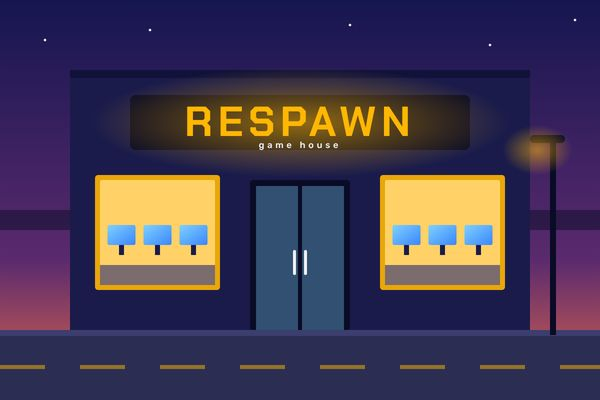

Cinco PCs novos no salão
O salão PC chegou a 20 estações. As máquinas novas têm a mesma configuração das outras, então não importa em qual você sentar: o desempenho é igual.
O que mudou por aqui nas últimas semanas.
O salão PC chegou a 20 estações. As máquinas novas têm a mesma configuração das outras, então não importa em qual você sentar: o desempenho é igual.
A partir da Copa Leste, toda partida no palco vai começar com a vinheta nova da casa, composta em estilo chiptune, aquele som de videogame antigo.
Vinheta oficial da Respawn (30 segundos)

Numa final de três partidas, o Leste Dragons virou contra o Penha Esports e levou o troféu. A próxima edição, a Copa Leste 5x5, já está com inscrições abertas.

Atendendo aos pedidos das famílias do Mario Kart em família, os domingos e feriados passam a abrir às 10h e fechar às 22h.